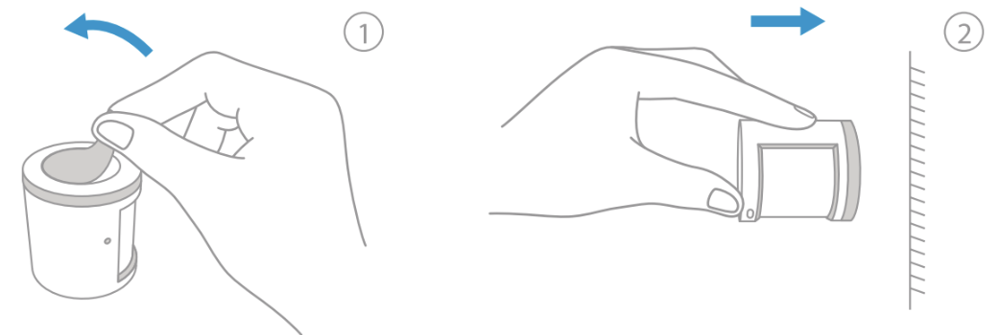

5 스마트 센서
5.1 모션 센서 T1
5.1.1 설치 영상
5.1.2 제품 소개
Aqara 모션 센서는 수동형 적외선으로 사람의 움직임을 감지합니다. 이 제품은 활동이나 비활동을 감지할 때, 자동으로 조명을 켜거나 끄는 것과 같은 다양한 현장을 설정하는 다른 스마트 액세서리와 함께 작동합니다. 이 제품의 에너지 소비는 낮습니다. 설치 시에 도구를 사용할 필요가 전혀 없으며 거의 모든 곳에 이 제품을 놓거나 붙이기만 하면 됩니다.
허브 필요
Aqara 허브는 이 제품을 HomeKit 기술로 작동할 수 있게 하는 필요합니다. 세부사항에 대해서는 www.aqara.com 사이트를 참조해 주십시오.
이 제품은 실내용입니다.
5.1.3 빠른 설정
5.1.3.1 허브 퀵 설치 가이드에 따라 허브를 앱에 추가해 주십시오.
5.1.3.2 사용 전에 배터리 절연 탭을 제거해 주십시오.
5.1.3.3 앱을 열고 “Home”(홈)을 선택한 다음에 오른쪽 상단 구석의 “+”를 누르고, “Add Device (Accessory)” (장치 추가(액세서리)) 페이지로 들어갑니다. “Motion Sensor” (모션 센서)를 선택하고, 지시에 따라 추가 합니다.
- 연결이 되지 않는 경우, 액세서리를 허브에 더 가까이 이동시켜서 다시 시도해 주십시오.
5.1.4 설치
유효 범위 테스트: 원하는 위치에서 액세서리의 리셋 버튼을 한 차례 누릅니다. 허브에 음성 프롬프트가 나타나는 경우, 액세서리가 허브와 유효하게 통신할 수 있다는 것을 나타냅니다.
- 신호 강도를 극대화하려면 금속 표면에 놓지 마십시오.
옵션 1: 모션 센서를 필요한 곳에 놓습니다.

옵션 2: 보호 필름을 제거하고(둥근 스티커가 상자 안에 있습니다), 원하는 위치에 직접 붙입니다.

옵션 3: 모션 센서를 스탠드에 붙이고 이 스탠드를 필요한 곳에 붙입니다.
표면을 깨끗하고 건조한 상채로 유지합니다.
권장되는 설치 높이는 1.2m - 2.1m입니다. 설치 높이가 1.2m이하이면, 감지 영역이 줄어들고 2.1m 이상이면 감지 영역에 블라인드 스팟이 있을 수 있습니다.
- 설치할 때 렌즈를 감지 영역에 맞춰 조정하고 테이블이나 캐비닛의 모서리 부분에 최대한 가깝게 놓거나 붙여야 한다는 점에 주의합니다.
액세서리 식별: 앱을 열고 “Device List (Accessories)”(장치목록(액세서리)) 페이지로 갑니다. 액세서리에서 리셋 버튼을 한 차례 누릅니다. 허브에 음성 프롬프트가 나타나고 앱 블링크에 관련 액세서리 아이콘이 나타나는 경우, 해당 액세서리가 식별되었다는 것을 나타냅니다.
- Aqara 홈 앱과 Aqara 앱만이 이 기능을 지원합니다.
5.1.5 제품 사양
모델: RTCGQ11LM
치수: 30 x 30 x 33mm (1.18 x 1.18 x 1.30인치)
무선 프로토콜: Zigbee
배터리: CR2450
최대 감지 거리: 7m
작동 온도: -10’ ~+45’C
작동 습도: 0 ~ 95% RH, 응축 없음
5.2 열림 감지 센서 T1
5.2.1 설치 영상
5.2.2 제품 소개
Aqara 도어 및 윈도우 센서는 센서 장치와 마그넷 사이의 거리를 통해 도어나 윈도우의 열림 및 닫힘 상태를 감지합니다. 에너지 소비가 적습니다. 도구가 필요하지 않으며, 그저 벗겨내고 붙이면 됩니다.
허브 필요
Aqara 허브는 이 제품을 HomeKit 기술로 작동할 수 있게 하는데 필요합니다. 세부 사항에 대해서는 www.aqara.com 사이트를 참조해 주십시오.
이 제품은 실내용입니다.
5.2.3 빠른 설정
5.2.3.1 허브 퀵 설치 가이드에 따라 허브를 앱에 추가해 주십시오.
5.2.3.2 사용 전에 배터리 절연 탭을 제거해 주십시오.
5.2.3.3 앱을 열고 “Home”(홈)을 선택한 다음에 오른쪽 상단 구석의 “+”를 누르면 “Add Device(Accessory)”(장치 추가(액세서리)) 페이지로 들어갑니다. “Door and Window Sensor”(도어 및 윈도우 센서)를 선택하고, 지시에 따라 추가합니다.
- 연결이 되지 않는 경우. 액세서리를 허브에 더 가까이 이동시켜서 다시 시도해 주십시오.
5.2.4 설치
유효 범위 테스트: 원하는 위치에서 액세서리의 리셋 버튼을 한차례 누릅니다. 허브에 음성 프롬프트가 나타나는 경우, 액세서리가 허브와 유효하게 통신할 수 있다는 것을 나타냅니다.
- 신호 강도를 극대화하려면 금속 표면에 놓지 마십시오.
5.2.4.1 보호 필름을 제거합니다.

5.2.4.2 설치하는 동안, 센서 장치와 마그넷의 마커 라인을 정렬하도록 합니다.
5.2.4.3 문이나 창에 붙입니다(센서 장치는 움직이지 않은 표면에, 마그넷은 움직이는 표면에 설치할 것이 권장되며, 문이나 창을 닫았을 때 설치 갭은 22mm 미만입니다).
- 표면을 깨끗하고 건조된 상태로 유지합니다.
액세서리 식별: 앱을 열고 “Device List (Accessories)”(장치 목록(액세서리)) 페이지로 갑니다. 액세서리에서 리셋버튼을 한 차례 누릅니다. 허브에 음성 프롬프트가 나타나고 앱 블링크에 관련 액세서리 아이콘이 나타나는 경우, 해당 액세서리가 식별되었다는 것을 나타냅니다.
- Aqara 홈 앱과 Aqara 앱만이 이 기능을 지원합니다.
5.2.5 제품 사양
모델: MCCGQ11LM
치수: 41 x 22 x 11mm (1.61 x 0.87 x 0.43인치)
무선 프로토콜: Zigbee
배터리: CR1632
최대 감지 거리: 22mm
작동 온도: -10’ ~ +50’C
작동 습도: 0 ~ 95% RH, 응축 없음
5.3 온습도 센서 T1
5.3.1 설치 영상
5.3.2 제품 소개
Aqara 온도 및 습도 센서는 실시간으로 실내 온도, 습도 및 기압을 모니터링하고 기록합니다. 현재 및 과거 데이터를 앱에 표시합니다,. 또한 다른 스마트 액세서리도 작동시켜 집을 자동화합니다.
허브 필요
Aqara 허브는 이 제품을 HomeKit 기술로 작동할 수 있게 하는데 필요합니다. 세부사항에 대해서는 www.aqara.com 사이트를 참조해 주십시오.
이 제품은 실내용입니다.

5.3.3 빠른 설정
5.3.3.1 허브 퀵 설치 가이드에 따라 허브를 앱에 추가해 주십시오.
5.3.3.2 사용 전에 배터리 절연 탭을 제거해 주십시오.
5.3.3.3 앱을 열고 “Home”(홈)을 선택한 다음에 오른쪽 상단의 “+” 을 누르면 “Add Device(Accessory)”(장치추가(액세서리)) 페이지로 들어갑니다. “Temperaure and Humidity Sensor”(온도 및 습도 센서)를 선택하고, 지시에 따라 추가합니다.
- 연결이 되지 않느 경우, 액세서시를 허브에 더 가까이 이동시켜서 다시 시도해 주세요.
5.3.4 설치
유효 범위 테스트: 원하는 위치에서 액세서리의 리셋 버튼을 한 차례 누릅니다. 허브에 음성 프롬프트가 나타나는 경우, 액세서리가 허브와 유효하게 통신할 수 있다는 것을 나타냅니다.
- 신호 강도를 극대화 하려면 금속 표면에 놓지 마십시오.
옵션 1: 원하는 위치에 직접 놓습니다.
옵션 2: 보호 필름을 제거하고 원하는 위치에 붙입니다.

- 표면에 깨끗하고 건조한 상태로 유지합니다.
액세서리 식별: 앱을 열고 “Device List (Accessories)”(장치 목록(액세서리)) 페이지로 들어갑니다. 액세서리에서 리셋 버트를 한 차례 누릅니다. 허브에 음성 프롬프트가 나타나고 앱 블링크에 관련 액세서리 아이콘이 나타나는 경우, 해당 액세서리가 식별되었다는 것을 나타냅니다.
- Aqara 홈 앱과 Aqara 앱만이 이 기능을 지원합니다.
5.3.5 제품 사양
모델: WSDCGQ11LM
치수: 36 x 36 x 9mm (1.42 x 1.42 x 0.35인치)
무선 프로토콜: Zigbee
배터리: CR2032
온도 범위 및 정밀도: -20’ ~ +50’C, (+-) 0.3’C
습도 범위 및 정밀도: 0 ~ 100% RH,(+-) 3%
기압 범위 및 정밀도: 30kPa ~ 110kPa, (+-)0.12kPa
5.4 조도 센서 T1
5.4.1 제품 소개
Aqara 조도 센서는 Zigbee3.0 프로토콜를 기반으로 작동하며, 조도를 감지하고 이를 기록합니다. 조도의 변화를 감지하여 스마트폰 앱을 통한 메시지 전달이 가능할 뿐만 아니라, 다른 장치들과 결합하여 다양하고 스마트한 시나리오를 만들 수 있습니다.
이 장치를 사용하려면 허브가 필요합니다.
일부 기능에는 특정 허브가 필요합니다. 세부 목록에 대해서는 www.aqara.com/kr/support.html을 참조하세요.
5.4.2 빠른 설정
5.4.2.1 앱에서 허브를 추가합니다.
5.4.2.2 앱의 “홈”탭에서 우측 상단의 “+” 눌러 “장치 추가” 페이지로 갑니다. 조도센서 T1을 선택하고 지시에 따라 진행합니다.
- 연결에 실패하였다면 장치를 허브와 더 가까이하여 시도해 주세요.
5.4.3 설치
연결 유효 범위 테스트: 측면의 버튼을 한 번 눌러 설치 하려는 장소가 연결 가능 범위안에 있는지 확인 하십시오. 연결 가능한 범위 안에 있다면 허브가 정상 연결되었음을 알릴 것입니다.
- 정확한 조도 측정을 위해서는 빛이 가려지지 않는 장소에 설치하는 것이 좋습니다.
옵션 1: 원하는 위치에 올려 둡니다.
옵션 2: 내부의 자석을 통해 금속 표면에 붙입니다.
옵션 3: 보호 필름을 제거하고 원하는 위치에 붙입니다.
- 붙이는 곳의 표면이 깨끗해야 하며 물기가 있어서는 안됩니다.
5.4.4 제품 사양
모델명: GZCGQ11LM
무선 프로토콜: Zigbee 3.0
배터리: CR2450
작동 습도: 0 ~ 95%, (비결로조건)
감지 범위: 0 ~ 83,000 lux
감지 정확도: (+-)2% (2854K의 백열등을 기준), (+-) 5%(그외 상황)
5.4.5 주의사항
이 제품은 장난감이 아닙니다. 이 제품을 아이의 손이 닿지 않는 곳에 두세요.
이 제품은 실내 사용 용도로 설계되었습니다. 습한 환경이나 실외에서 사용하지 마세요.
물기를 조심합니다. 물이나 다른 액체를 제품에 엎지르지 마세요.
이 제품을 열원 부근에 놓지 마세요. 제대로 환기되지 않는 곳에 놓지 마세요.
이 제품을 자체적으로 수리하려고 하지 마세요. support@aqara.kr에 연락하시기 바랍니다.
이 제품은 가정 생활의 오란, 편의성 및 메시지 알림을 개선하는 경우에만 적합합니다. 사용자가 제품 사용 지침을 위반하는 경우, 제조업체는 어떠한 위험 및 재산 손실에도 책임을 지지 않습니다.
5.5 누수 감지 센서 T1
5.5.1 제품 소개
Aqara 누수 감지 센서 T1은 누수와 침수 상태를 감지하여 앱을 통해 알림을 보내거나 다른 스마트 장치를 제어할 수 있은 센서입니다. 저전력 기술의 설계로 배터리 교체 없이도 오래 사용할 수 있으며, 별도의 도가가 없어도 손쉽게 제품을 설치하고 배터리를 교체하여 사용할 수 있습니다.
- 해당 제품을 사용하기 위해서는 호환 가능한 스마트 허브가 반드시 필요합니다. 자세한 내용은 www.aqara.com/support를 참고해 주세요.
5.5.2 설치
장치를 설치하기 전에 해당 제품을 지원하는 스마트 허브를 반드시 설치해 주세요.
자세한 내용은 아내의 QR 코드를 스캔하시거나 www.aqara.com/support를 참고해 주세요.

- 장치 추가에 실패하는 경우, 장치를 허브에 더 가까이 이동시킨 후 다시 시도해 주세요.
5.5.3 제품 사양
제품명: 누수 감지 센서 T1
모델명: WL-S02D
배터리: CR2032
무선 프로토콜: Zigbee 3.0
제품크기: 50 x 50 x 15mm
작동 온도: -10’C ~ 55’C
작동습도: 0 ~ 100% RH, 비결로 조건
구성품: 누수 감지 센서 T1 x 1, 사용자 매뉴얼 x 1
5.5.4 경고
이 제품은 장난감이 아닙니다. 이 제품을 아이의 손이 닿지 않는 곳에 두세요.
이 제품은 실내 사용 용도로 설계되었습니다. 습한 환경이나 실외에서 사용하지 마세요.
물기를 조심합니다. 물이나 다른 액체를 제품에 엎지르지 마세요.
이 제품을 열원 부근에 놓지 마세요. 제대로 환기되지 않는 곳에 놓지 마세요.
이 제품을 자체적으로 수리하려고 하지 마세요. support@aqara.kr에 연락하시기 바랍니다.
이 제품은 가정 생활의 오란, 편의성 및 메시지 알림을 개선하는 경우에만 적합합니다. 사용자가 제품 사용 지침을 위반하는 경우, 제조업체는 어떠한 위험 및 재산 손실에도 책임을 지지 않습니다.
5.5.5 주의 사항
배터리를 잘못된 유형으로 교체하는 경우 폭발의 위험이 있습니다.
사용한 배터리는 지침에 따라 폐기하십시오.
배터리를 삼키지 마십시오. 화학적 화상의 위험이 있습니다.
본 제품에는 코인/버튼 셀 배터리가 포함되어 있습니다. 코인/버튼 셀 배터리를 삼킬 경우 단 2시간 만에 심한 화상을 입을 수 있으며 사망에 이를 수 있습니다.
새 배터리와 사용한 배터는 어린아이의 손이 닿지 않는 곳에 보관하시시오.
배터리를 삼켰거나 배터리가 신체의 어느 부위라도삽입된 것이라고 생각되면 즉시 의사의 진료를 받으십시오.
배터리를 불이나 뜨거운 오븐에 폐기하거나 기계적으로 압쇄하거나 절단하면 폭발을 일으킬 수 있습니다.
배터리를 온도가 매우 높은 환경에 두면 폭발이나 인화성 액체 또는 가스의 누출을 유발할 수 있습니다.
극저기압에 노출된 배터리는 폭발이나 인화성 액체 또는 가스의 누출을 유발할 수 있습니다.
본 기기는 2m 이하의 높이에서만 장착 가능합니다.